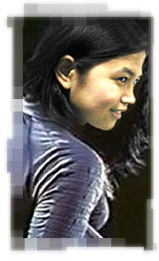
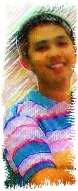
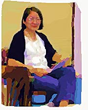

Flavors of the Term
Jean
Simpleng
kikay, hindi yata tinatablan ng sakit kasi laging perfect
attendance – REY
"one of the boys" sa pc/net working area…
mabait na helpdesk... buti nalang at mahaba ang pasensya…
maaasahan sa anumang bagay... naks naman. – WENG
Nakita mo ung KWAN na dala ni KWAN papunta sa KWAN kaninang
KWAN… pag nabibigla, katono ni ate gay kung magsalita…
need I say more – Precious Anne
a simple and a quite outgoing person. a responsible and
somewhat a level-headed person. - Leo
Down to earth and friendly, total help desk quality ika
nga :) – Albert
sarap kakulitan kasi parating naka-smile... although minsan
napipikon rin! pero ok lang, madali namang patawanin ulit
eh! ;) – Anonymous
smile naman dyan and everything..mukhang following her ate?
– Juan Crisostomo
Si Jean?! My favorite phone pal (at least sa 316 at 466)
kasi laging masayahin (ang boses). Kahit na nga minsan eh
walang nakakatawa eh masaya pa rin. He! He! Kidding aside,
Jean is a very sweet and loyal friend and she really works
hard once she sets her mind on doing something. - Brian
ganda ng ngiti niya :D - Anonymous
A cheerful colleague. Super sipag sa trabaho at medyo strict
kase lagi kang kukulitin sa mga request nya. Hehehe. But seriously,
a very simple but determined individual who always works at
her best. - Agnes
ITC's "little sister", always calling the senior
ITPs "ate" or "kuya". a hardworking and
reliable co-worker - Celine
Rhaniel
Jolly person, palabati – Rey
paboritong tawagin ng mga enrollment users... pati na rin
ng mga helpdesk. laging handang tumulong... huwag lang sa
larangan ng pag-ibig dahil matamlay ang lovelife nya ngayon...
:) matamlay ang lovelife dahil ang kanyang irog ay malayo
sa kanya... :) ilang buwan na wala sa sarili dahil sa lungkot...
limang buwan nalang rhaniel (as of 1/30/04). – Weng
sobrang galang, opo ng opo, feeling ko tuloy ang tanda ko
na, eh 27 pa lang naman ako! – Joie
ang nag-iisang tenor ng ITC Choir… transient resident
ng G-308… madali lapitan – Precious Anne
a very workaholic person(second to james), kahit sabado pumapasok.
he has talent in singing. seem to be a very friendly person.
– Leo
ang bait talaga ng batang toh..pero pano ko ba sasabihin
sa kanya na di na siya bata para umibig... - Anonymous
Hardworking workaholic, may love affair pala sya sa office,
hehehe, wink wink, Goodluck. – Albert
very hardworking. idol at work. idol sa chicks... pareho
kaming slow dun eh! ;) a great guy who will go out of his
way to help his friends. – Anonymous
the man behind the myth. true blue workaholic..este green
pala. need not look further to find his BETTER half. na mimiss
na nga daw nya eh. alak at mic lng..pwede na yan :-) –
Juan Crisostomo
All-around handy man ng bayan. Matulungin, magalang, masipag,
at maaasahan. - Brian
"Best Employee" for all seasons! Umulan, Umaraw
o Bumagyo man! hehehe... - Love
A person with a BIG helping hand, kahit sino, kahit saan
at kahit kalian, kaibigan. Minsan corny magbiro pero pwede
na. siguro namimiss lang sya kaya sa min na lng nya binubuhos
lahat. - Agnes
super efficient. what more proof than receiving the ITC Excellence
Award for 4 straight school years. a son that parents will
be proud of. magalang at mabait na kaibigan. - Celine
Cata
Cata
- Young at heart, always. – Rey
mama ng bayang ITC... maasahan sa gimikan... lalo na pag
wala ang papa :) – Weng
often mistaken as mataray and uncaring pero sa totoo lang,
totoong "mama" talaga s'ya. no artificial colorings,
simply natural. she cares for those people who truly cares
for her also. generous, lalu na sa food. S'ya rin ang mama
na parang laging nagdadalaga! - JOIE
makwento… never a dull moment as long as she’s
around – Precious Anne
one of the "foundations" of itc. a happy, always
smiling person – Leo
Veteran, bs math, madalas ko makita sa equitable pci bank,
trustworthy :) – Albert
idol ko naman ito sa pagda-diet! too bad hindi ko magaya
yung ginawa nya, kakaibang self-discipline! - Anonymous
when it's time to go cruisin' this woman is never (or close
to never) absent. don't utter "picture" she'll instantly
strike a pose. food disciplinarian. – Juan Crisostomo
si mama very dependable expecially if i need advice--what
i like most about her is her way of not letting negative things
affect her..carry na carry niya talaga :d siya rin ang inspiration
ko sa pagpapapayat...masaya siya kasama, game na game, at
walang kiyeme :D all out pa mag-share ng food :D - Anonymous
Cata is someone who I can always rely on, she's there to
share your thoughts with, no matter what the subject is. She's
a friend who you can feel comfortable with. Someone who will
gently offer advice and opinions, someone to laugh and to
cry with. Cata is a nice person, one who listens, one who
advises, one who's there for me and shares my interests. CATA
you're always be a friend to me. - dheck :-))
"Mama" for all seasons! =) Game na game! - Love
Like me, Cata can sometimes be brutally frank and that's
part of her charm. She may be a bit intimidating at first
but she's really a very generous and caring person once you
get to know her. - Brian
The mama of everyone. I find her to be a person of good judgment,
ask and she shall shed light on anything. The amazing mama
kase gimikera, laging kaya ng bulsa at katawan basta may dependable
babysitter (para kay KC and Kevin) lang. Kaya kahit bundok
ng Timbuktu aakyatin nya. Hehehe. You can tell her anything
and rest assured sa kin lang nya yun sasabihin. Hehehe. Joke
lang. The mama with a bbbbbig heart. A good neighbor who always
shares whatever she is munching on. That’s what I like
best about her. - Agnes
Mama, as she is fondly called, is an irony. motherly in ITC
but a self-confessed "forever single" when it comes
to "lakwatsa". she watches her figure very well
but enjoys eating. an inspiration for those who dream of losing
weight! - Celine
|